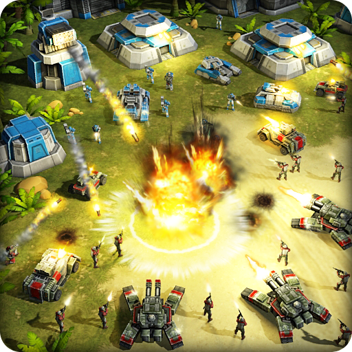

Результат Арены
Главный вклад. Результат сглаживается: короткая серия не считается абсолютным показателем силы.

ART OF WAR 3COMMUNITY / MASTERS На сайт сообществаПобеды на Арене, ранг и опыт — узнай, как они складываются в квалификационный балл. Меняй параметры и сравнивай игроков.
Главный вклад. Результат сглаживается: короткая серия не считается абсолютным показателем силы.
Чем выше ранг, тем больше баллов за опыт. В расчёте ранг ограничен 30-м.
Учитывается вся история побед. Его вклад растёт с рангом: от 5 до 10 баллов при винрейте 100%.
S = 65A + 25R + 10W × (0,5 + 0,5R)
R = (min(ранг, 30) − 1) / 29 · W = общий винрейт / 100
A = 0,5 + (победы / N − 0,5) × min(N, 20) / (min(N, 20) + 10)
Здесь N = 10, поэтому A = 0,25 + 0,05 × победы. Каждая дополнительная победа даёт 3,25 балла. При 10 победах, 30-м ранге и винрейте 100% результат — 83,75. Балл не является процентом вероятности прохода.
В квалификации учитываются все бои при минимуме 10. Этот калькулятор сравнивает только серии из 10 боёв. Ранг и общий винрейт фиксируются перед стартом квалификации.
32 участника: 24 места по квотам лиг, 6 дополнительных и 2 приглашения. Итоговый баланс — 16 игроков Конфедерации и 16 Сопротивления.
Калькулятор не определяет проход: он зависит от лиги, фракции и результатов остальных кандидатов.